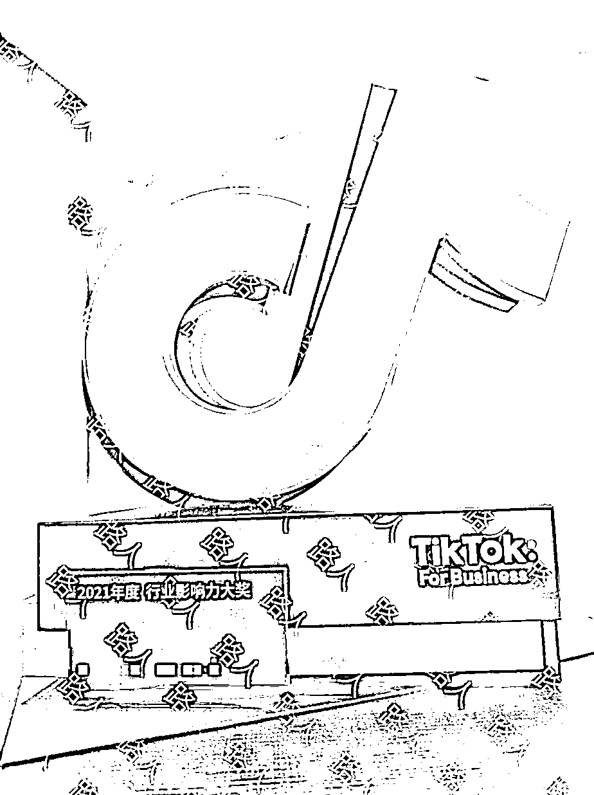
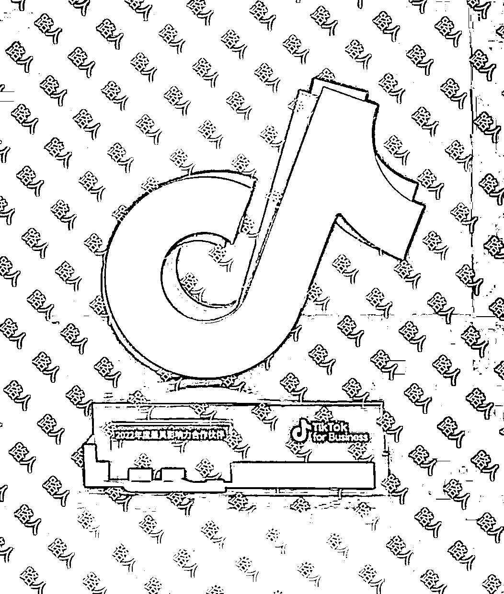
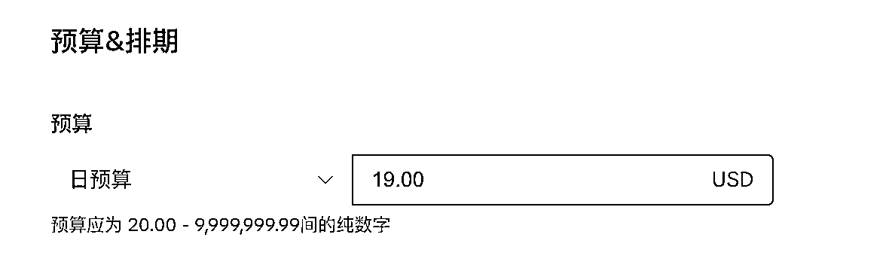
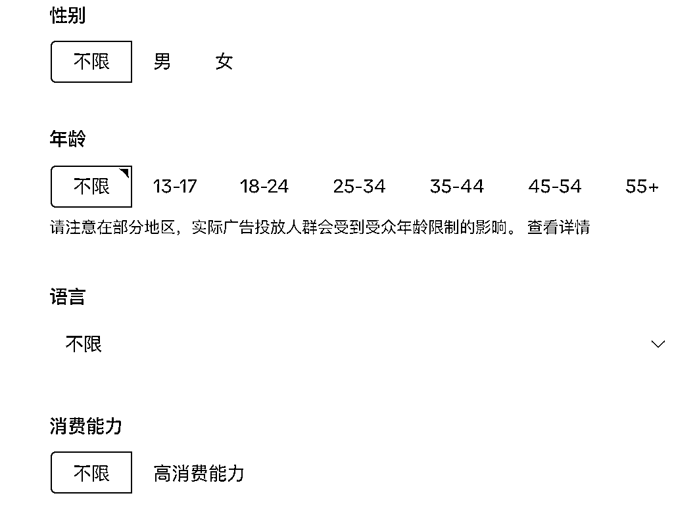
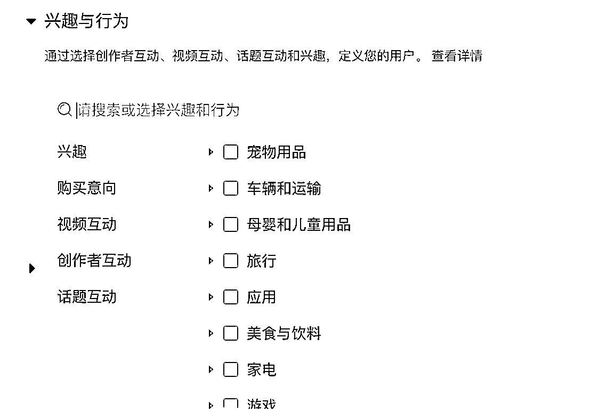
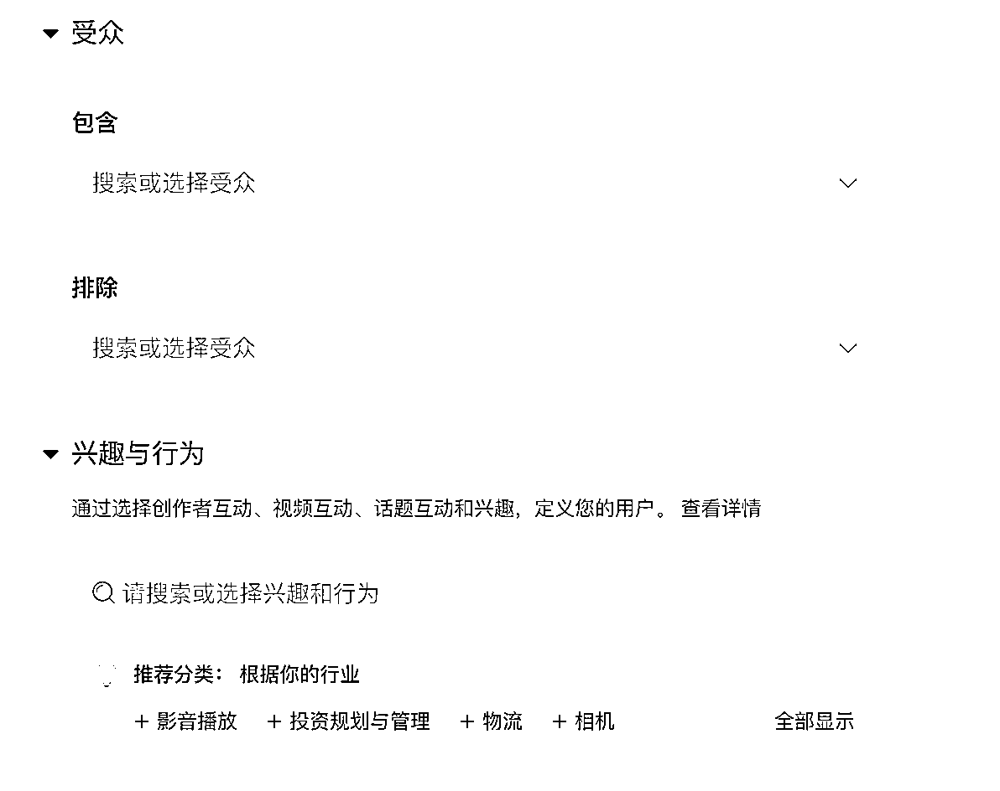
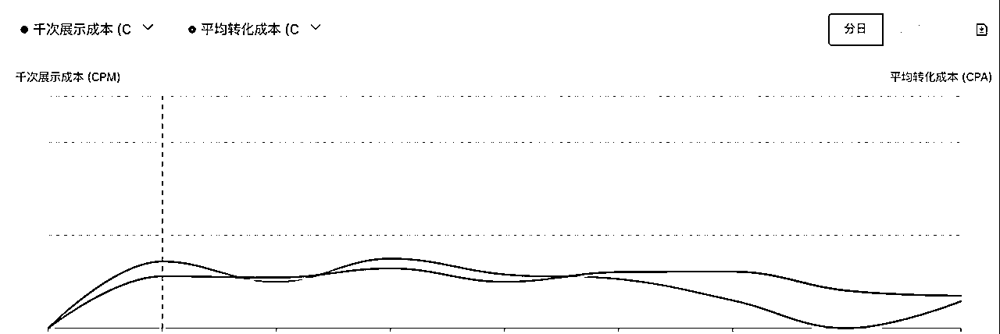

来源：https://almava1awg.feishu.cn/docx/UDFkdWb2to5rpyxdXpwcM6vGnCd
大家好，我是路人，一个投流九位数美金的投手。之前曾带领公司 TikTok 业务从 0 到 1 起步，成为行业头部玩家，并连续荣获 TikTok 官方认证最具影响力合作伙伴。


和 TikTok 赛道的朋友交流，发现不管是电商还是短剧，在投流上普遍存在痛点：
今天针对第一点：如何高效投流，主要分享我的核心思路。
广告组的最小投放预算为 20 美金，建议以此设置单个广告组投放预算来跑出前期的结论。

同地区同定向设置下，小预算测试的结论一般与大预算增投后一致，在得出测试结论后，如果能达成投放 ROI 目标，则可逐步增投。
素材：一般建议每个广告组最少分配 5 条素材。这样的架构是为了找头部。
如果素材太多，广告组会持续轮换学习，如果素材少则结论不普遍。
在 TikTok，如果头部素材能占据广告组内 50% 以上消耗，其它素材每条占比较低，一般这条头部能带来较好的转化效果，此时可以尝试新建一个组，把这条头部素材和其它新素材放在一起，此时一般头部素材也能跑出较好的效果，如果新素材能跑得优于老的头部素材，则新素材会成为新的爆量素材。
如果广告组内素材消耗占比较分散，如消耗 top 1 - 30%，消耗 top 2 - 20%， 消耗 top 3 - 15%，这种情况下如广告组回收达标则直接增投，如果消耗第二 第三回收更好，可复制一条，把消耗 第一的 剔除，再看回收情况表现。
在广告计划层级完成设置后，广告组可以调整多个变量，如地区，性别，年龄，爱好，手机系统等。可设置对照组，其它测试组在广告组的基础上单次只调整一个变量，验证不同的变量组合的结论，最后组合成核心的广告投放架构。



增投预算方式，除了第一点中提到的复制新建以外，更常用的方式是单次给广告组预算提升 20%，加完预算后，间隔 3 小时以上，观察 CPM 和转化成本变化，如果这两个值的变化幅度小于 20%，可继续增投，直到达到止损线为止，止损线一般为：1、实际 ROI 低于最低 ROI 要求，2、成本涨幅高于预算提升幅度。

以上是第一篇简单分享的内容~ 如果关于 TikTok 有任何想讨论的方向，欢迎评论留言